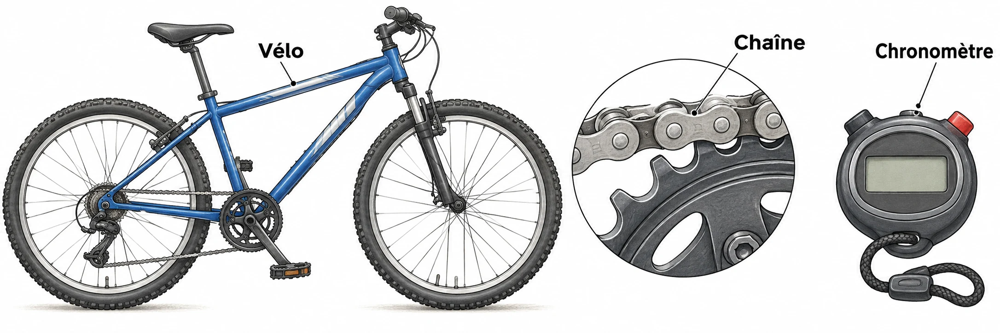

OBSERVER · EXPÉRIMENTER · EXPLIQUER
Le vélo transmet le mouvement
Fais tourner l’entrée de trois mécanismes. Observe ce qui bouge à la sortie.

✎ Garde ta feuille à côté de toi.Prévois sur papier → manipule → observe → rédige sur papier.
Des observations pour expliquer
- Q2 : dessine les flèches de mouvement, puis distingue transmission et transformation.
- Q3–Q4 : utilise tes observations pour expliquer le dépannage et le treuil.
Appuie ton explication sur une valeur, un changement observé ou une comparaison. Distingue ce que montre le modèle et ce qui reste à vérifier.